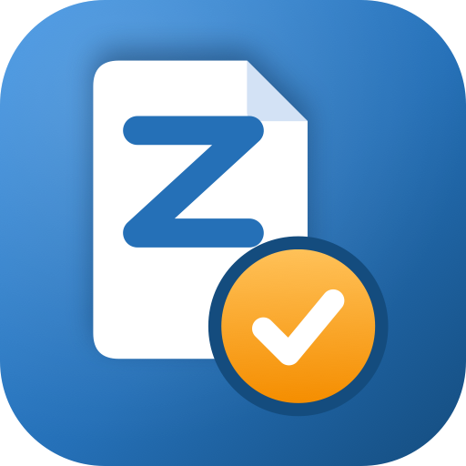

ZettanoNutzungsbedingungen für die App „Zettano“
Stand: 28.09.2026
1. Anbieter und Geltungsbereich
1.1 Anbieter der App Zettano ist B-CORE-IT, Inhaber Ahmet Bozkurt, Birkenweg 11, 57645 Nister („Anbieter“).
1.2 Diese Bedingungen gelten für die Nutzung der App und der zugehörigen Cloud-Dienste. Abweichende Bedingungen des Nutzers gelten nicht.
1.3 Zettano richtet sich ausschließlich an Unternehmer im Sinne von § 14 BGB (z. B. Handwerks- und Servicebetriebe sowie deren Mitarbeiter). Eine Nutzung als Verbraucher ist nicht vorgesehen.
2. Leistungen
2.1 Zettano ermöglicht u. a. die Verwaltung von Kunden und Aufträgen, das Erstellen von Serviceberichten mit Checklisten, Fotos und Unterschrift, Angeboten und Rechnungen als PDF sowie die Zusammenarbeit im Team.
2.2 Die App ist offline nutzbar; Daten werden synchronisiert, sobald eine Internetverbindung besteht.
2.3 KI-Funktionen laufen lokal auf dem Gerät (Apple Intelligence) und stehen nur auf unterstützten Geräten zur Verfügung. KI-Vorschläge (Texte, Kalkulationen) sind unverbindliche Entwürfe und vom Nutzer vor Verwendung zu prüfen.
2.4 Der Anbieter bemüht sich um eine hohe Verfügbarkeit, schuldet aber keine bestimmte Verfügbarkeit der Cloud-Dienste. Wartungsarbeiten und Störungen außerhalb des Einflussbereichs des Anbieters sind möglich.
2.5 Der Anbieter kann die App weiterentwickeln und Funktionen ändern, sofern die wesentlichen Funktionen erhalten bleiben oder der Nutzer rechtzeitig informiert wird.
3. Konto, Firma und Team
3.1 Die Anmeldung erfolgt per E-Mail-Code. Der Nutzer hält seinen E-Mail-Zugang geschützt.
3.2 Der Inhaber legt eine Firma an und kann Mitarbeiter per Einladungscode aufnehmen. Er ist dafür verantwortlich, den Code nur berechtigten Personen zu geben. Mitarbeiter sehen die Daten der Firma entsprechend ihrer Rolle.
3.3 Der Nutzer kann sein Konto jederzeit in der App löschen (Einstellungen → „Konto löschen“). Löscht der Inhaber sein Konto, werden die Firma und alle Firmendaten endgültig gelöscht.
4. Pflichten des Nutzers
4.1 Der Nutzer ist für die von ihm erfassten Inhalte verantwortlich und stellt sicher, dass er personenbezogene Daten seiner Kunden rechtmäßig verarbeitet (u. a. Information der Betroffenen).
4.2 Steuer- und handelsrechtliche Pflichten (z. B. korrekte Rechnungsangaben nach § 14 UStG, Aufbewahrung nach GoBD, § 147 AO) liegen beim Nutzer. Zettano unterstützt ihn dabei (fortlaufende Rechnungsnummern, Sperre gestellter Rechnungen, Stornorechnungen), ersetzt aber keine Steuer- oder Rechtsberatung. Der Nutzer sichert Rechnungen, die er aufbewahren muss, zusätzlich (z. B. PDF-Export in sein Archiv).
4.3 Die App darf nicht missbräuchlich genutzt werden, insbesondere nicht zur Speicherung rechtswidriger Inhalte oder zu Angriffen auf die Infrastruktur.
5. Preise
Die Nutzung ist derzeit kostenlos. Der Anbieter kündigt die Einführung kostenpflichtiger Tarife mindestens 4 Wochen vorher an; der Nutzer kann dann entscheiden, ob er die App weiter nutzt.
6. Datenschutz und Auftragsverarbeitung
Es gilt die Datenschutzerklärung. Für die Daten, die der Nutzer über seine Kunden erfasst, handelt der Anbieter als Auftragsverarbeiter; hierfür gilt der Vertrag zur Auftragsverarbeitung (AVV), der mit Annahme dieser Bedingungen durch den Inhaber geschlossen wird.
7. Haftung
7.1 Der Anbieter haftet unbeschränkt bei Vorsatz und grober Fahrlässigkeit, bei Verletzung von Leben, Körper oder Gesundheit sowie nach dem Produkthaftungsgesetz.
7.2 Bei leichter Fahrlässigkeit haftet der Anbieter nur bei Verletzung wesentlicher Vertragspflichten (Pflichten, deren Erfüllung die ordnungsgemäße Durchführung des Vertrags erst ermöglicht und auf deren Einhaltung der Nutzer regelmäßig vertrauen darf), begrenzt auf den vertragstypischen, vorhersehbaren Schaden.
7.3 Für den Verlust von Daten haftet der Anbieter nur in dem Umfang, in dem der Schaden auch bei ordnungsgemäßer Datensicherung durch den Nutzer (z. B. PDF-Export von Rechnungen) eingetreten wäre.
8. Laufzeit und Kündigung
Der Nutzungsvertrag läuft auf unbestimmte Zeit. Der Nutzer kann ihn jederzeit durch Löschen seines Kontos beenden. Der Anbieter kann mit einer Frist von 4 Wochen kündigen; das Recht zur außerordentlichen Kündigung bleibt unberührt. Vor einer Einstellung des Dienstes erhält der Nutzer ausreichend Zeit, seine Daten zu exportieren.
9. Änderungen der Bedingungen
Änderungen werden dem Nutzer mindestens 4 Wochen vor Inkrafttreten in der App oder per E-Mail mitgeteilt. Widerspricht er nicht innerhalb dieser Frist, gelten die Änderungen als angenommen; auf diese Folge wird in der Mitteilung hingewiesen.
10. Schlussbestimmungen
Es gilt deutsches Recht unter Ausschluss des UN-Kaufrechts. Gerichtsstand ist, soweit zulässig, der Sitz des Anbieters. Sollte eine Bestimmung unwirksam sein, bleibt der Vertrag im Übrigen wirksam.